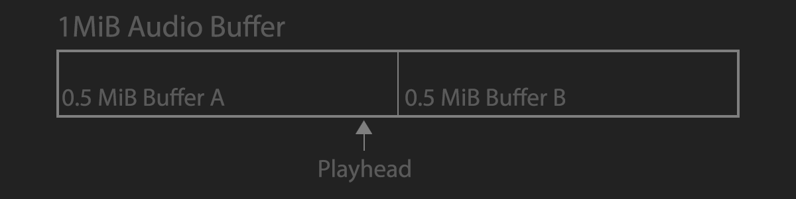
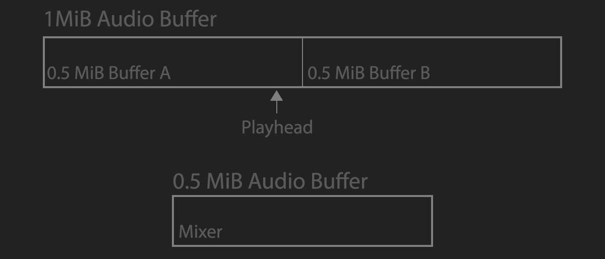
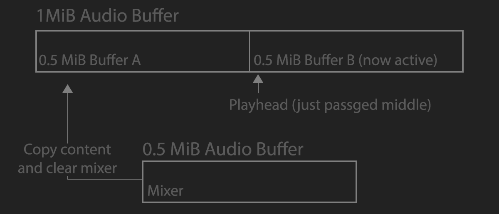

Sound Timing
Some audio API's like FMOD give you a callback that fires at a fixed interval. Other API's like direct sound let you query where the read and write cursors are. Whatever the API, you will probably have to do sound processing on a seperate, high priority thread. Sound is played back at 48,000 Hz or 44,100 Hz, that's about 0.02 ms / frame, which is a crazy small amount of time. For games, we don't have to process audio in real time, most API's will let you submit a large chunk that gets played back, while you process some other large chunk.
In SimpleSound, i took a double buffered approach. The API let's you specify how many milliseconds the back buffer for audio should be. Two chunks are created in linear memory, the front buffer and the back buffer. These are really one big circular buffer, i just use it with binary segmentation. The circular buffer is forever played on loop.

Other than the buffer that's being played, there is also a mixer. The mixer is half the size of the "back buffer". The mixer is one chunk. When a sound is played, it gets mixed into the mixer, not the front or back buffer directly. If a sound is longer than one chunk, a chunk's worth of sound is mixed, and the sound is stored in a list for processing into the next chunk.

As the audio is playing, the playhead will pass eihter the start, or middle of the buffer. The half of the buffer that the playhead just entered is the active chunk, we don't touch that. As soon as the active chunk changes, the contents of the mixer is copied into the inactive chunk. Once the copy is done, the mixer is cleared, and any pending sounds are mixed.

When a sound is played, it mixes into the start of the mixer, as i don't keep a running time to offset sound starts. This means all sounds start on a set interval, which may sound strange when a lot of sounds are playing. In practice, i have not had any issues with this. If it becomes a problem, ading a timer to offset sound mixing is trivial.
The latency is fairly high (2x the chunk size) with this approach, think of it like a tripple buffer scheme. Lets explore that latency assuming that the audio is processed in 50 ms chunks. All audio is first mixed into the mixer. It takes 50 ms to be copied from the mixer to the inactive chunk. It then takes another 50ms before the chunks flip and the sound is that was just copied is played.
Implementation
TODO: Provide some boiler plate